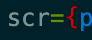

For my overarching project I intend to create an instrument with an Arduino. I currently have no electronics experience but I have created web based instruments in the past; combining my passions for music and web development. These projects, Soft Sound and Black Box, were the first things I created that I felt genuinely proud of. Black Box in particular inspired this new project as it was the first time I developed something with a physical component. It uses a phone gyroscope as a way to control audio effects. Achieving this proved to be incredibly difficult but the outcome was uniquely mine as opposed to creating my version of an instrument that already existed. This course and project seem like the perfect opportunity to further explore audio programming as it is not something that would otherwise be taught in my graphic design degree. Although I don't know exactly what the final outcome will be, I think this project relates to the course because I will be improving my coding skills, as well as learning a new skill with the Arduino to build an instrument for use in my own music practice. Rather than working with a predefined tool or software, I have the autonomy to create whatever I want or need for my music.
In order to get this project started I have begun doing research as well as acquiring some tools for my build. The first thing I looked into was getting an Arduino. I ended purchasing an Arduino Starter Kit with the intention of working my way through the beginner projects included. This way I can familiarize myself with the system and learn the basics I need to make something unique for this project. The next thing I began researching was if I can code my Arduino in JavaScript. This is the only language I know and it is also the language I would like to work in after graduating so it could be a good opportunity to continue practicing. With that being said, since it is the only language I know, perhaps I should try something else. I'll have to decide once I am further along in the project what I have the capacity for. Another resource I acquired is a book called Make: Analog Synthesizers. I am unsure how useful it will be given my choice to use an Arduino but hopefully it will provide some insight into traditional synth builds. I have done some simple searches for other musical instrument Arduino projects but as of right now the biggest unknown is what exactly I will be making. Beyond using an Arduino, possibly JavaScript, and creating something musical, I don't really know. I think I will have a stronger idea of what, after I become more familiar with creating Arduino projects.
As a project within a project I have decided to learn some more front end developer skills through the creation of this blog. Using Codecademy, I completed an HTML course, a JavaScript course, and a Bootstrap course. The HTML and JavaScript courses felt reassuring to fill in any gaps in my knowledge. The Bootstrap course on the other hand was entirely new, and this is the first time I am implementing this CSS library. I see the benefits to using something like this but since I have designed more using plain CSS, it felt kind of frustrating. I am currently working through the CSS course, and Vue.js course with the intention to implement any new skills here. I will likely add the Sass course to my learning path so that I can better customize Bootstrap.
Edit: I re-coded the site without Bootstrap to save time since I am less familiar with the syntax.
Blog Two: Arduino Starter Kit
I must admit, I entered this project quite naive. I knew I wanted to learn some basic electronics but when I chose the Arduino, I didn't even really know what a microcontroller was. Having completed the Arduino Starter Kit, I have a much better sense of what I am capable of making as a beginner with the current components I have. I personally found the kit to be incredibly helpful. As I've mentioned, I had no experience with any of this before embarking on this project. I recognize that tutorials only take learning so far but I'm really glad I took this route as it's created a foundation of knowledge for creating future unique projects. I don't think I would have known where to start otherwise.
For my project: I know that I don't want to use the piezo which means I will have to create a controller for a computer based instrument in order to hear sound. I considered the option of using one of the instruments I have already built but I would rather make something intentionally for the Arduino to control. The tilt sensor pales in comparison to using a phone gyroscope so I won't be using this component either. A phototransistor or a temperature sensor could produce some really cool results but I am leaning toward making something more consistent. That leaves pushbuttons and potentiometers as inputs. In terms of outputs, I would like to use LEDs as indicators that something is happening. That leaves my favourite component in the kit… the LCD. I don't know why but coding the LCD was so much fun. It also led me to some really great things in my research. It made me think about my GameBoy Color so I started looking into Arduino GameBoy projects:
I started to look into Trash80 because they sounded familiar and then I found this:
Not only was the M8 Tracker made with a Teensy but you can make your own DIY version with a Teensy! This is everything I want to make/own and more but this will have to be a continuation of this project outside of the limited time left in our course. I will, however, use the M8 as inspiration for my build. I intend to create a web based step sequencer that is controlled through pushbuttons. The LCD will display a text based menu that functions alongside the web interface, just for fun. Unlike the last sequencer I made, it would be great to have selectable sounds instead of fixed sounds. I will program the sequencer in Javascript and use JohnnyFive to communicate with the Arduino.
Special mention:
Progress: SEQ
I created a PDF for my progress submission. Here is my Figma and my GitHub.
On the last page you can see that I have created the Arduino controller. I decided to create physical controls for all of the constant controls in the application: play/pause, tempo, volume, download. The LCD then prints whatever you're changing within the application. I was able to get everything running with Johnny-Five no problem but what I did not consider was the fluctuation in analog signal (the pontentiometers). I tried to create a conditional statement that prevents the variable from updating and printing to the LCD if said change is smaller than x amount. This did work better than nothing but I don't think this will be good a enough solution for controlling the master volume and tempo respectively. I will likely get rid of the potentiometers and keep the rest as is. Only if I have time will I create a more robust button system to control these aspects of the sequencer.
Blog Three: CLI, Git and GitHub
Prior to this class, I had barely created one project using my command line interface and I did not know what Git was. I had been using GitHub for other classes but had little to no understanding about what I was actually doing. I was essentially just using the pages feature to host my websites for free. As I started reading the documentation for the frameworks I wanted to use for my sequencer, I realized that I needed to learn more before jumping in. Similarly to how I approached the Arduino, I decided to complete several courses on Codecademy. I feel a little bit like a broken record talking about their app but I have been using it a lot over the past two months and I have learned so much. Like how to put my terminal in Matrix mode!
In the first course I learned what the hell the command line is, a text interface for your computer, and a lot of commands! I've started to memorize some of them but others I still have to refer back to my notes.
In the second course about Git and GitHub I was completely shocked. I did roughly understand that GitHub was saving versions/a history of my work but I was completely blown away by how powerful these tools are. I immediately reorganized all of my code folders and initiated git repositories. I practiced committing changes, pushing work to GitHub, cloning work from GitHub, creating branches, making pull requests, and merging branches. It was a great feeling when I deleted the GitHub desktop app because I no longer needed it. Then I learned about README.md files which brought me back to Aaron Swartz and allowed me to make some of my repositories look legitimate.
So all of this on it's own was great but what does this have to do with my project? Well I went back to that first project I mentioned and looked through the code. I could actually understand what I did! I had downloaded Node.js which provided my Javascript programs with an environment to run outside of the web. Along with that came NPM. I had used NPM to download my dependencies and create a package.json file. All of this enabled me to require objects from those dependencies in my application's JavaScript files. After making all of these connections, this is what I went on to do for my sequencer! I was able to work through a much more complicated setup because I took the time to learn all of this. I still followed a handful of tutorials but when something didn't work, I was able to logically figure out what was going on and fix it.
With all that being said, I did struggle quite a bit with setting up my toolchain for React. More specifically the Webpack developer server. I saw many people online in various places saying to just use the template React provides called Create React App . Everything I've done so far is working but I may still try out the React application template so that I know how that works too and whether or not it enhances my workflow. It will likely be easier to use but I also want to be able to understand what it's doing. This is why I set up my project from scratch in the first place.
Blog Four: The Little Bug That Almost Could
I was feeling incredibly confident after setting up my toolchain and testing all of the different components (my Arduino controller, Tone.js, and React) successfully. I did a pretty complicated thing, and I understood what I was doing. Or at least I thought I did.
I decided to start coding the bulk of my project by making the interface of my application first. It seemed like the easiest part of my build and since I had already designed the whole thing to the pixel, I didn't think it would take me that long. Then came The Bug. Quite literally the first thing I tried to do in my code was import my image assets. I then spent 2 full days trying to figure out why it wasn't working. I also submitted the bug as my code review but I can do a better job explaining it now, post bug.
Expectations
I wanted React to create img elements in my index.html file. In order to do this I needed to import my image assets into the javascript file that I was writing my React component in. After importing the image and storing it in a variable, I could then call it in my img src attribute.
Then I needed to write a rule for that type of file in my webpack configuration.
Test looks for x file, type takes x file and puts it into my build folder. That should allow my build index.html file to access the image. But it didn't.
The Bug
The bug that I was experiencing was not one I could easily find a solution to online. When I ran my code I did not receive any errors. The image appeared in the correct folder, with the correct name, and yet when I opened my browser the image was not there. It didn't even appear with a broken image symbol, it was just an empty outline. I proceeded to watch a series of tutorials on using these dependencies as well as reading through the documentation for Webpack.
The more I watched and read, the more I learned about this toolchain. The videos made it look so easy and yet I couldn't get it to work. I was really starting to feel like maybe I just didn't get it. That this was beyond my skill level. I started to create a workaround in case I was not able to figure it out in time to submit my project.
Workaround
My workaround for this issue was to hardcode the images into my index.html file. That way I didn't need to worry about importing them, I just needed to make sure that my assets folder was also in my final build folder. I then coded a slider and number input on top of the images in my React application so that I could still easily access the values I needed while achieving the look I was after. And then I noticed that my peer reviewer had left their review so I quickly checked to see if they had been able to figure out the bug.

What I Learned
I was so certain that this work was above my skill level that I didn't even check for such a small error. It was both amazing and devastating to realize that a typo was the only thing broken in my code. Surprisingly this is the first time something like this has happened to me. Any other time I've had such a persistent bug it really was because I didn't know what I was doing. This was a big lesson because now I will absolutely check for typos first. This bug took so much of my time. With that being said, the time I spent really trying to understand how every aspect of what I was doing worked was not really wasted. I have a much better understanding of what I've done which will be incredibly helpful for the next React application I build. I also decided to keep my workaround, in part to save time but also because it may actually make more sense than what I was trying to do in the first place.
SEQ is still a work in progress but here's everything I've done!
The controller is intended to be used for play/pause, volume control, tempo, and downloading the audio file. You can see the issue I talked about in my progress report in the first video: Since the potentiometer values are not stable, they print to the LCD when they shouldn't. In the second video I've commented out the code for them so that you can see how it should behave.
Aside from learning some new syntax to use Johnny-Five, coding this felt too easy. All I'm really doing is storing inputs and outputs into variables to control other things. I found wiring the Arduino board more complicated and time consuming than coding this. I felt as though I needed to add more complexity to my project to make up for it. My one regret is that I should have spent more time learning how to connect said inputs and outputs to other things rather than just moving on to the next aspect of the project. I just assumed I would be able to export from this file with ease. That ended up not being the case.
I made some of the interface in React but the learning curve for using dependencies is so steep that I spent most of my time learning how to implement it rather than learning how to use it. I did start a course on React but I did not finish it by the time I needed to start coding. I learned enough JSX to write a couple of function components. I could then render those components in HTML. I am currently trying to figure out how to handle state changes for inputs so that I can connect the volume and tempo controls to Tone.
This is what I was hoping to make in Tone. As you'll see in the Github pages deployment, I'm not quite there yet. I know what I need to do but I just couldn't quite grasp how to do it in JavaScript. The buttons for example; I could figure out which row had been clicked but I didn't know how to access the grandchildren(?) of an HTMLcollection. I was starting to get into some logic problems that were way over my head. What I did do was connect the play/pause button to a loop. That loop would then in theory be populated by the selections on the sequencer. For now, the button rows connect to the key that they will output to the loop.
What I Learned
Although I wish I had more "completed" for this submission, I am so proud of how much I've learned in the process so far. Starting this project, albeit maybe a little too late in the semester, brought me back to my motivated and inspired self. I spent a couple of weeks making incredibly fun projects on an Arduino, I completed 9 courses on Codecademy, and I started coding every day. I might not have everything working yet but I know that I can and will soon.